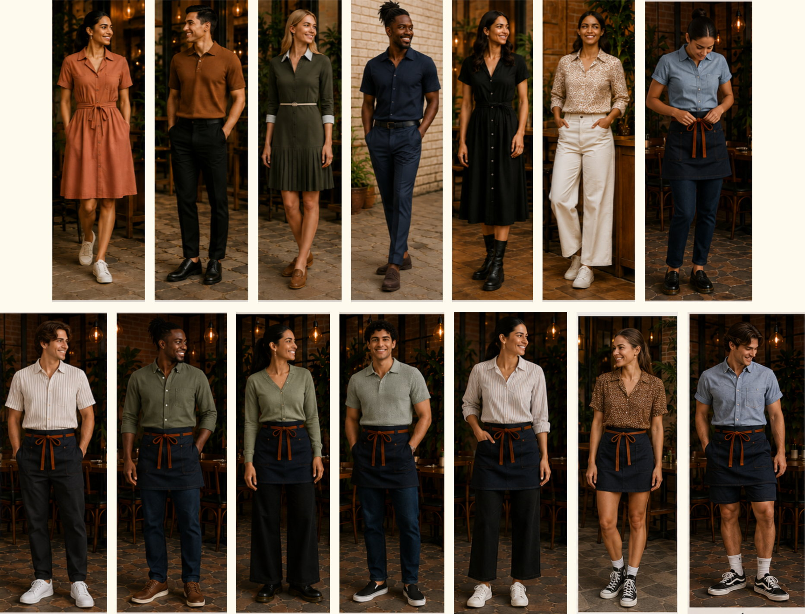
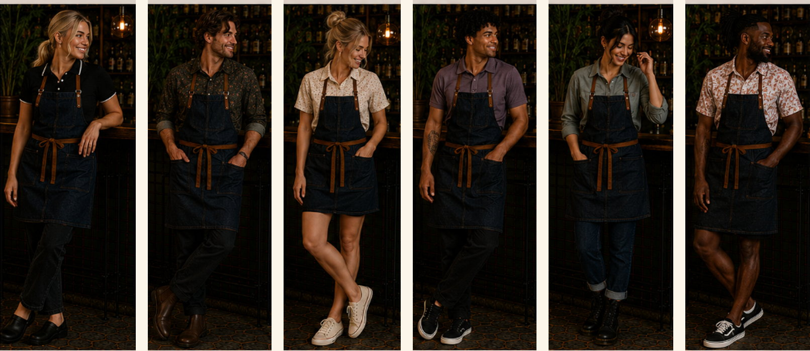
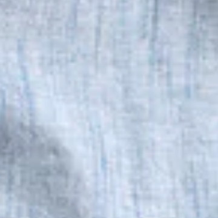
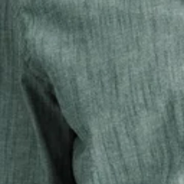
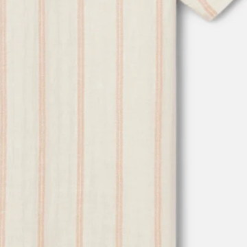
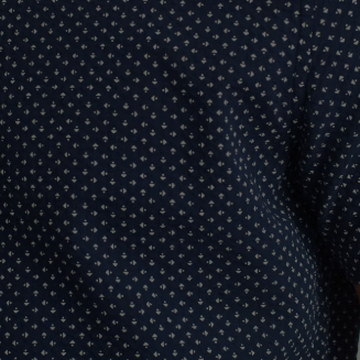
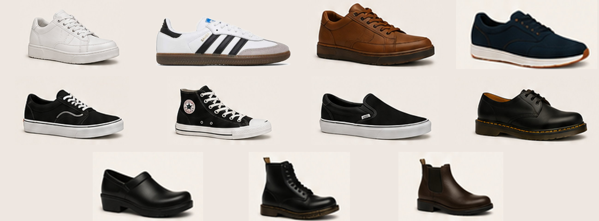
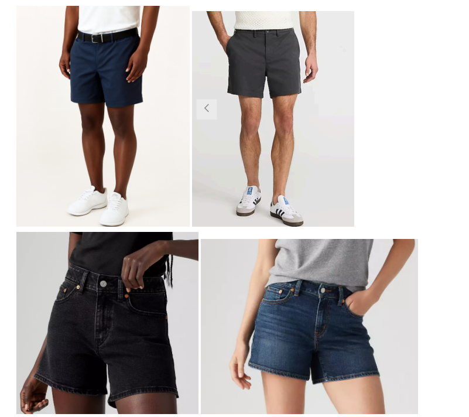

Our appearance is part of the guest experience. A clean, professional, and elevated look helps create a welcoming atmosphere, builds trust with our guests, and reflects the pride we take in our work. Employees are expected to arrive in uniform, well-groomed, and ready for every shift.
Employees who arrive out of dress code will be sent home at manager's discretion to change and will not be paid for time missed as a result.
If you have questions about an item or need accommodation, speak with a manager before your shift.
Hosts & Servers
Hosts and Servers play an important role in creating the guest experience. Team Members are expected to maintain a polished, professional appearance that reflects The Peached Tortilla's commitment to warm and welcoming hospitality.
Tops
Professional blouses, button-down shirts, polos, cardigans, or other business-casual tops are permitted.
Short or long sleeves only; sleeveless, off-the-shoulder, or strapless tops are not permitted.
Solid colors are preferred; subtle stripes or other business-casual patterns are acceptable.
No large graphics, images, wording, or visible brand logos.
Tops must provide full coverage of the chest, midriff, and back while standing, bending, and reaching.
Sheer or see-through fabrics are not permitted.
Tops must fit appropriately and may not be excessively tight, oversized, or revealing.
Clothing must be clean, wrinkle-free, and in good condition.
Bottoms
Jeans, dress pants, chinos, tailored pants, or shorts are permitted.
Dresses and skirts are permitted for Hosts and Servers and must be knee-length.
Shorts must have a minimum 5-inch inseam and provide full coverage while standing, bending, and reaching.
Bottoms must fit appropriately and may not be excessively baggy, overly tight, or revealing.
Leggings, joggers, athletic wear, cargo pants, distressed denim, and clothing that is torn, ripped, or frayed are not permitted.
Bartenders
Bartenders create an inviting atmosphere by engaging with guests, delivering exceptional service, and keeping the energy of the bar flowing. Their appearance should reflect the same level of professionalism and hospitality they bring to every interaction.
Tops
Must have a collar and be a button-down shirt, polo, knit polo, or other professional collared shirt.
Short or long sleeves only; sleeveless shirts are not permitted.
Solid colors are preferred; subtle stripes or other business-casual patterns are acceptable.
No large graphics, images, wording, or visible brand logos.
Shirts must provide full coverage while standing, bending, and reaching.
Sheer or see-through fabrics are not permitted.
Shirts must fit appropriately and may not be excessively tight, oversized, or revealing.
Shirts must be clean, wrinkle-free, and in good condition.
Bottoms
Pants and shorts must be solid dark colors: black, dark gray, dark blue, or dark-wash denim.
Jeans, chinos, dress pants, or tailored pants are permitted. Skirts and dresses are not permitted.
Shorts must have a minimum 5-inch inseam and provide full coverage while standing, bending, and reaching.
Bottoms must fit appropriately and may not be excessively baggy, overly tight, or revealing.
Leggings, joggers, athletic wear, cargo pants, distressed denim, and clothing that is torn, ripped, or frayed are not permitted.
Barbacks & Food Runners
Tops
Gray Peached Tortilla t-shirts only
Shirts must be clean, wrinkle-free, and in good condition
Bottoms
Black or dark-wash blue denim pants or shorts only — no leggings, joggers, athletic wear, cargo pants, other pant styles, or skirts
Clothing should fit properly and may not be excessively baggy or overly tight
Shorts must have at least a 5-inch inseam and fully cover the backside while standing or bending
No faded, light-wash, distressed, torn, ripped, or frayed denim
Manager on Duty (MOD)
Managers are expected to present themselves in a manner that reflects their leadership role. Attire must be clean, neat, well-maintained, and appropriate for interacting with guests, employees, and vendors.
Managers set the standard for their teams and are expected to remain polished, professional, and guest-ready at all times. This expectation applies regardless of assignment, including while working an Expo/MOD shift.
Clothing must fit appropriately and may not be excessively tight, oversized, or revealing. T-shirts, athletic wear, clothing with large logos or graphics, and other excessively casual attire are not permitted.
Shoes
Closed-toe, closed-heel, slip-resistant shoes are required.
Shoes must be primarily black, white, brown, dark gray, dark blue, or another neutral color. Brightly colored, neon, or overly patterned shoes are not permitted.
Sneakers, walking shoes, flats, or boots are permitted.
High heels, flip-flops, slippers, sandals, and other open-toe or open-heel shoes are not permitted.
Shoes must be clean, well-maintained, and in good repair.
Additional Requirements
Bartenders and Servers must wear a company-approved apron at all times while working. Aprons must be clean, wrinkle-free, and in good condition.
Hats, sunglasses, and bandanas are not permitted while working unless approved as a reasonable accommodation for medical or religious reasons.
Hygiene & Grooming
Good personal hygiene is expected at all times. Team Members should report to work clean, well-groomed, and free from body odor.
Hair must be clean, neat, and secured away from the face. Hair that is shoulder-length or longer must be tied back while working.
Facial hair must be clean and neatly groomed.
Jewelry should be minimal, not oversized, and must not interfere with job duties or create a safety hazard.
Hands and fingernails must be clean and well-maintained. Chipped nail polish and excessively long artificial nails that interfere with safe food handling or job duties are not permitted.
Perfume, cologne, and scented lotions should be used sparingly or avoided, as guests and coworkers may be sensitive to strong fragrances.
Lookbook
We're warm, welcoming, and a little playful. Our style is an extension of our hospitality — approachable, confident, and elevated.Thanks for showing up as your best self.
Hosts & Servers

Bartenders

Our Colors
Suggested palette — not required
Cream
Stone
Saddle
Rust
Plum
Sage
Olive
Forest
Chambray
Navy
Charcoal
Black
These are suggestions, not requirements — a palette that complements our dining room and photographs well on the floor. Any color that meets the standards for your role is welcome; these are simply the ones that always work. Woven textures, fine stripes, and small all-over prints are acceptable. One exception: bartender bottoms must be dark solids.
Textures & Patterns We Love

Chambray Blue

Green Chambray

Stripe

Micro-Floral
Approved Shoe Options
Comfortable. Safe. Stylish. Socks required.

Any brand — these are the shapes we like. Keep them a solid or neutral color and keep them clean. Closed toe, closed heel, slip-resistant, socks on. No neon, no loud patterns, no high heels, no open backs.
Types of Shorts
Chino · Denim · Linen Blend · Work Short

5"Minimum, measured from inseam to hem.
Uniform & Property Agreement
By working in a uniformed position, you understand and agree to the following:
The two issued Peached Tortilla t-shirts are yours to keep. Additional shirts may be purchased at the employee discount rate.
Aprons are company property and must be returned upon resignation, termination, or separation from employment.
You are responsible for laundering, ironing, and generally caring for all issued uniform items.
Uniform items may not be altered.
If an apron is not returned or is damaged through negligence, the Company may deduct the replacement cost from your final paycheck where permitted by law.
$65Bartender Apron
$50Server Apron
Uniform items are issued and receipt is confirmed with a manager separately — this page is for reference on the policy itself.